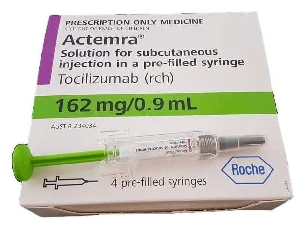

Actemra 162 mg/0,9 ml SC Enjeksiyonluk Çözelti İçeren Kullanıma Hazır Enjektör, 4 Adet

Ne için kullanılır
KT · Bölüm 1 ACTEMRA 0,9 mL’lik enjeksiyonluk çözeltide 162 mg tocilizumab içeren steril kullanıma hazır enjektör şeklinde bulunmaktadır. Çözelti, renksiz veya açık sarı renktedir. ACTEMRA, 4 adet kullanıma hazır enjektör olarak kullanıma sunulmaktadır. ACTEMRA etkin madde olarak, interlökin-6 adı verilen bir tür proteinin (sitokin) etkilerini bloke eden bir monoklonal antikor olan tocilizumabı içerir. Sitokin vücutta iltihaplanmaların oluşmasında rol oynar ve bunun bloke edilmesi bu iltihaplanmaların azalmasına yardımcı olur. Tocilizumab, Çin Hamster Yumurtalık hücrelerinden elde edilmiştir.
ACTEMRA önceki tedavilerinden fayda görmemiş olan yetişkin hastalarda, vücudun kendi bağışıklık sisteminin oluşturduğu (otoimmün) bir hastalık olan, orta ila şiddetli romatoid artrit tedavisinde kullanılır. ACTEMRA eklemlerdeki ağrı ve şişlik gibi belirtilerin azalmasına yardımcı olur ve ayrıca günlük işlerinizdeki performansınızı artırır. ACTEMRA’nın hastalığınız nedeniyle eklemlerdeki kıkırdak ve kemiklerde oluşan hasarı yavaşlattığı ve günlük aktivitelerinizi yapabilme becerinizi arttırdığı gösterilmiştir. ACTEMRA genellikle metotreksat ile birlikte kullanılır. Ancak doktorunuz metotreksatın uygun olmadığını düşünüyorsa, ACTEMRA’yı tek başına da kullanabilirsiniz. ACTEMRA, özellikle başa ve boyuna kan sağlayan, vücudun en büyük atardamarlarının iltihaplanması sebebiyle oluşan, baş ağrısı, yorgunluk, çene ağrısı gibi belirtileri olan ve felç ve körlüğe neden olabilen ‘dev hücreli arterit’ (DHA) adı verilen bir hastalığın tedavisi için kullanılır. ACTEMRA, başınızdaki, boynunuzdaki ve kollarınızdaki atardamarlar ve toplar damarlardaki ağrıyı ve şişkinliği azaltabilir. DHA sıklıkla steroid adı verilen ilaçlarla tedavi edilmektedir. Bunlar genellikle etkilidir, ancak uzun süre yüksek dozlarla kullanıldığında yan etkileri olabilmektedir. Steroid dozunu azaltmak, DHA’nın alevlenmesine de sebep olabilir. Tedaviye ACTEMRA’yı eklemek, DHA’yı kontrol altında tutarak, steroidlerin daha kısa süreli kullanılması anlamına gelmektedir. ACTEMRA, en az 10 kg ağırlığında 2 yaş ve üstü aktif sistemik jüvenil idiyopatik artritli (sJIA) çocuklar ve ergenlerin tedavisinde kullanılır. Aktif sistemik jüvenil idiyopatik artrit (sJIA), bir veya birkaç eklemde ağrı ve şişme ile birlikte ateş ve döküntüye neden olan bir iltihabi hastalıktır. ACTEMRA aktif sJIA belirtilerini iyileştirmek için kullanılır. Tek başına veya metotreksat ile birlikte kullanılabilir. ACTEMRA, en az 10 kg ağırlığında 2 yaş ve üstü aktif poliartiküler jüvenil idiyopatik artritli (pJIA) çocuklar ve ergenlerin tedavisinde kullanılır. Aktif poliartiküler jüvenil idiyopatik artrit (pJIA), bir veya birkaç eklemde ağrı ve şişmeye neden olan bir iltihap hastalığıdır. ACTEMRA aktif pJIA belirtilerini iyileştirmek için kullanılır. Tek başına veya metotreksat ile birlikte kullanılabilir.